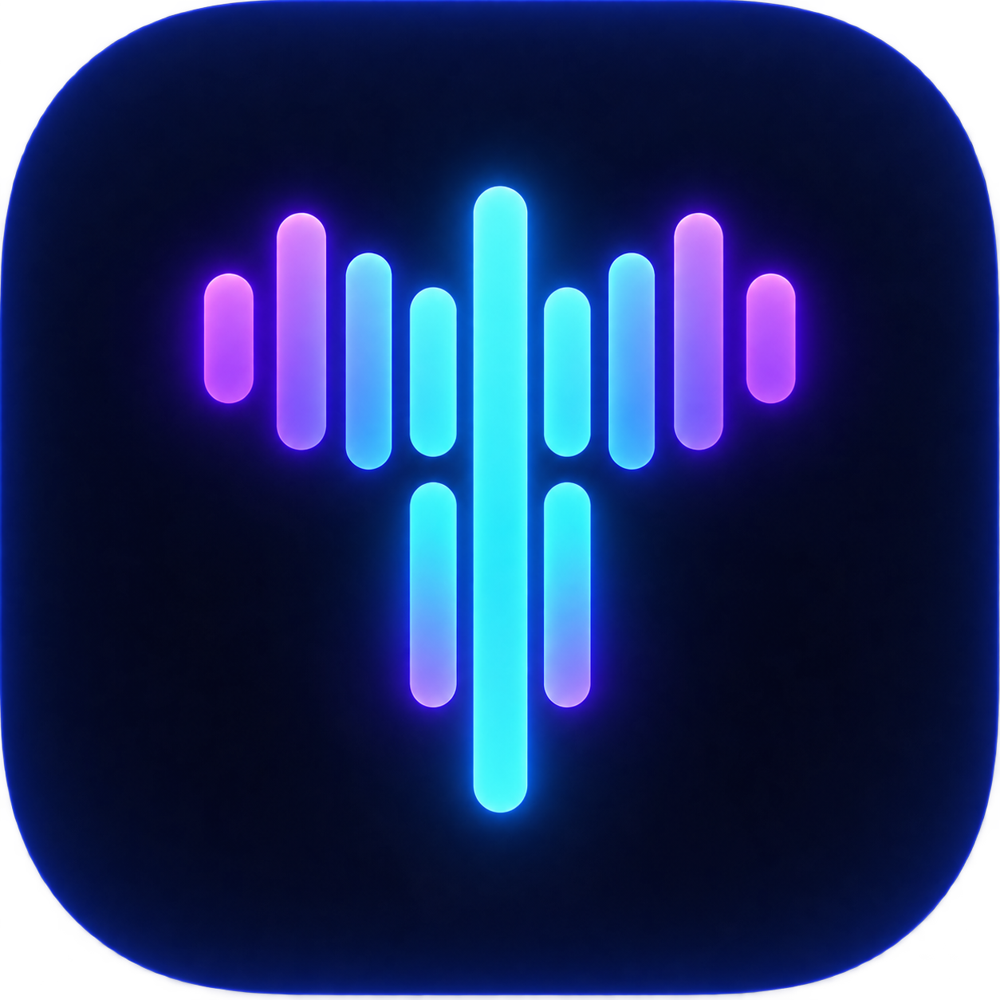
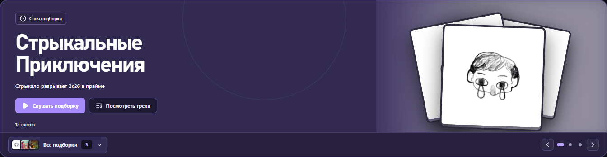
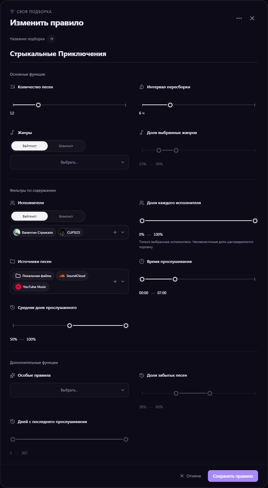
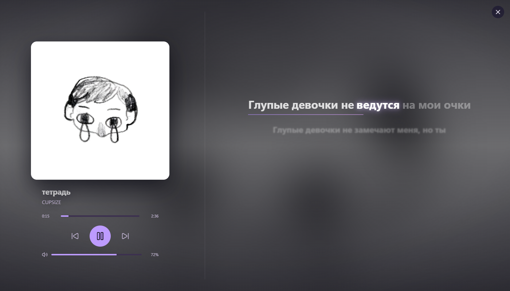
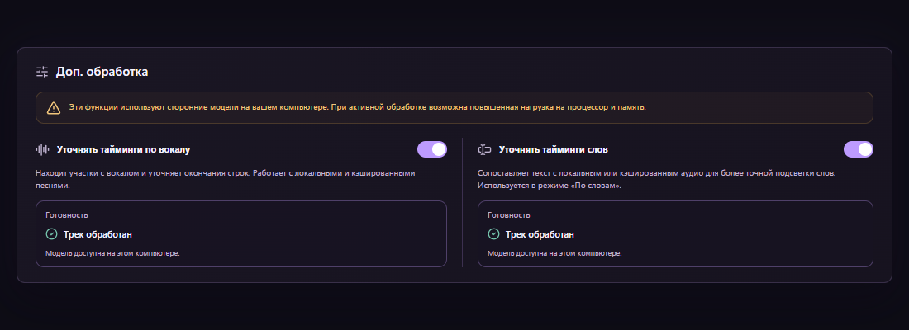
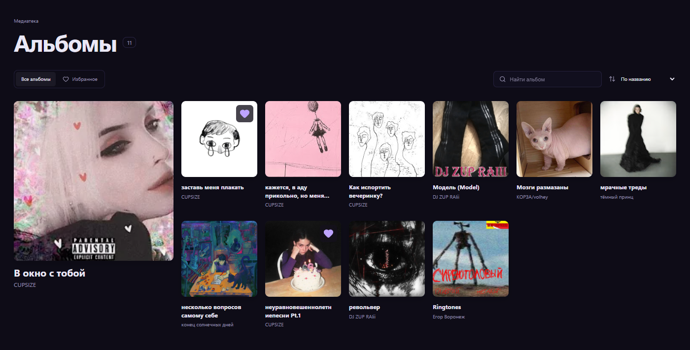
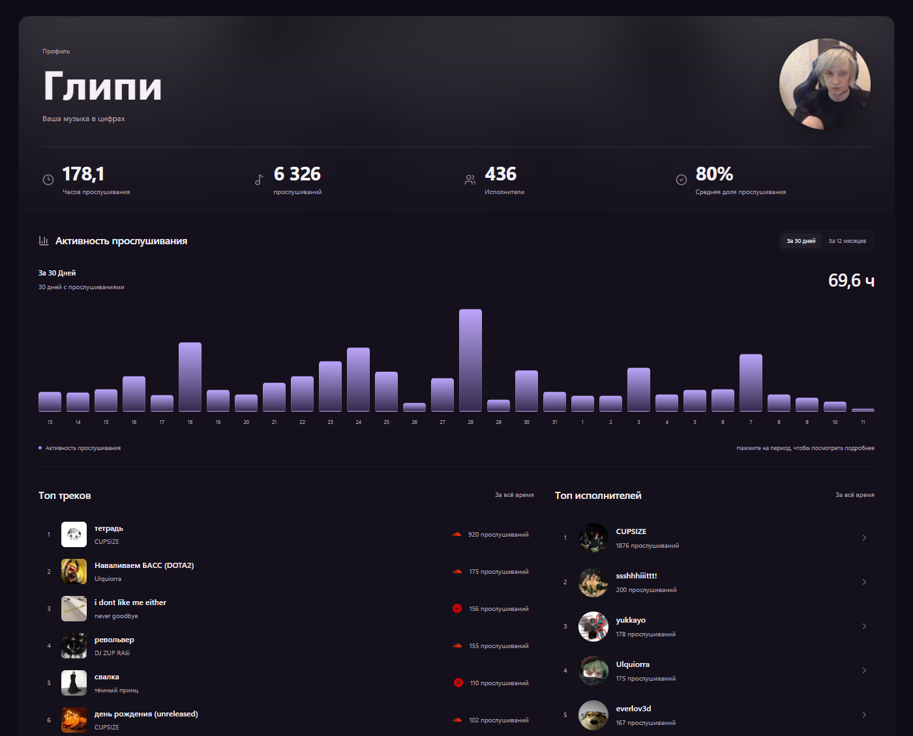
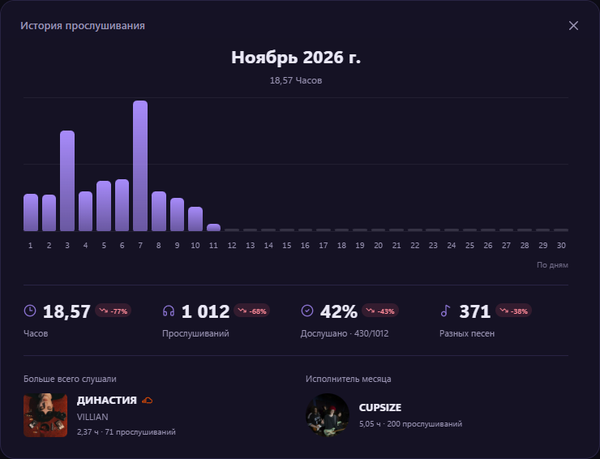

Только нужные исполнители
Белые и чёрные списки, доли артистов и фильтры по источникам.

TEMPOОбновление Tempo
Собственные подборки, лирика по словам
и новый взгляд на всю твою медиатеку.
Выбирай исполнителей, жанры и источники.
Tempo подберёт песни из твоей музыки — и обновит микс, когда нужно.

Белые и чёрные списки, доли артистов и фильтры по источникам.
Время прослушивания, дослушивания и песни, к которым давно не возвращался.
От 1 до 50 треков. Выбери пересборку при открытии или сохранение состава до следующего срока.

Доли жанров и исполнителей, диапазон дослушиваний и давность последнего запуска.
Скопируй её правило, измени условия и сохрани свой вариант.
По желанию дополняй микс подходящими находками из SoundCloud.
Подсветка по словам, уточнение таймингов по аудио
и отдельный визуализатор на всю ширину экрана.

Текущие слова мягко выделяются, а уже спетые остаются заметнее следующих.
Вокальный анализ помогает уточнять строки. Анализ слов включается отдельно.
Скрой панель трека, настрой размер текста, заполнение и движение строк.

Анализ работает с локальным или полностью закэшированным аудио.
Уточнение слов остаётся экспериментальным: тайминги можно скорректировать вручную.
Крупные обложки, спокойные полупрозрачные поверхности
и общий стиль плейлистов, альбомов, исполнителей и подборок.

Плотный каталог альбомов и широкие страницы коллекций.
Избранное, воспроизведение и контекстные меню в едином оформлении.
Создавай плейлисты с обложками из недавних песен и переименовывай прямо в шапке.
Новый профиль собирает часто включаемые песни, исполнителей
и привычки прослушивания в одной картине.


Переходи по графику до пятиминутных участков истории.
Время, запуски и дослушивания — относительно предыдущего активного периода.
Смотри самые прослушиваемые песни и исполнителей периода. Открывай меню и включай их прямо из профиля.
История распределяет прослушивания по времени начала сеанса.
Главная помнит уже загруженные секции.
Сохранённые подборки остаются под рукой, пока данные обновляются.
Последние данные главной сохраняются между переходами по приложению.
Готовые миксы используют сохранённый состав до выбранного срока обновления.
Проверка файлов, скачивание и анализ трека теперь показываются отдельно.
Знакомые файлы находятся в доступных папках по сохранённому отпечатку — вместе с историей, лирикой и плейлистами.
Отдельная настройка хранит данные волны SoundCloud до 12 часов, в том числе между запусками.
Ищи знакомые слова, если включено кэширование текста.
Отдельно показывай исправления и обновления нужного масштаба.
Новая настройка отображения, которую можно отключить.
Названия находятся в обоих вариантах написания.
Перетаскивай их и скрывай до следующей сборки.
Общие новые окна для плейлистов и своих правил.
Актуальный знак Tempo в системных ресурсах приложения.
Одинаковые избранное, отступы и действия на похожих страницах.